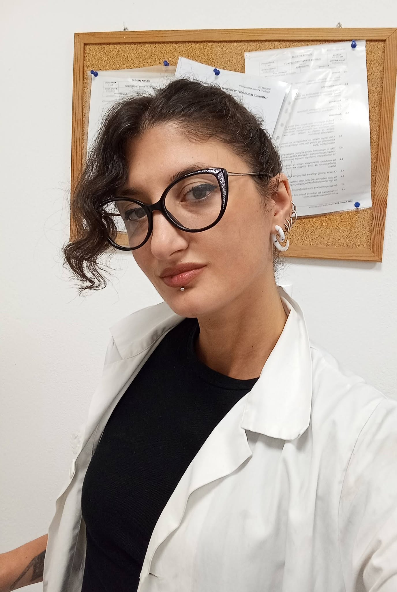
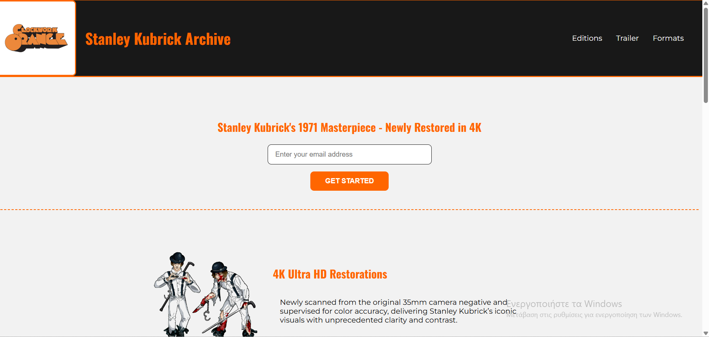
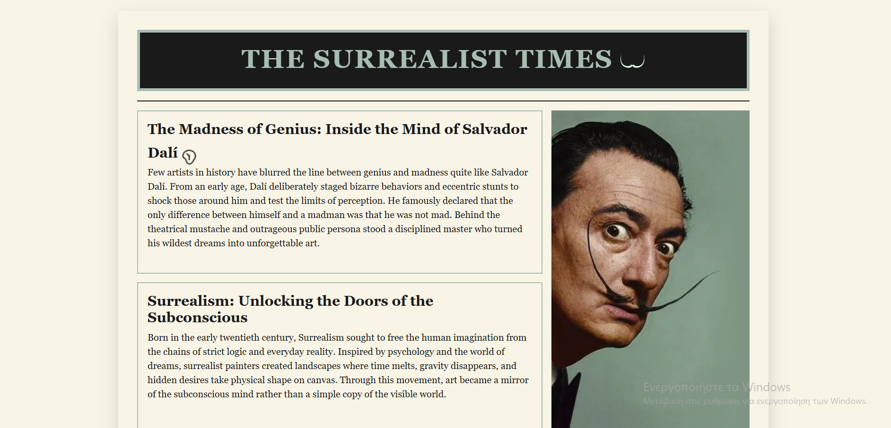

Aspiring Front-End Developer
Based in Greece, I am a dedicated Junior Developer focusing on creating clean, accessible, and modern web applications. Currently building my foundation in web technologies.

Responsive product landing page featuring Flexbox layouts, custom typography, and embedded media.

Editorial newspaper-style tribute page built with semantic HTML5 and responsive CSS3 layout.
Let's build something amazing together! Feel free to reach out:
Μιλάω Ελληνικά και είμαι έτοιμη για νέες συνεργασίες στην Ελλάδα!